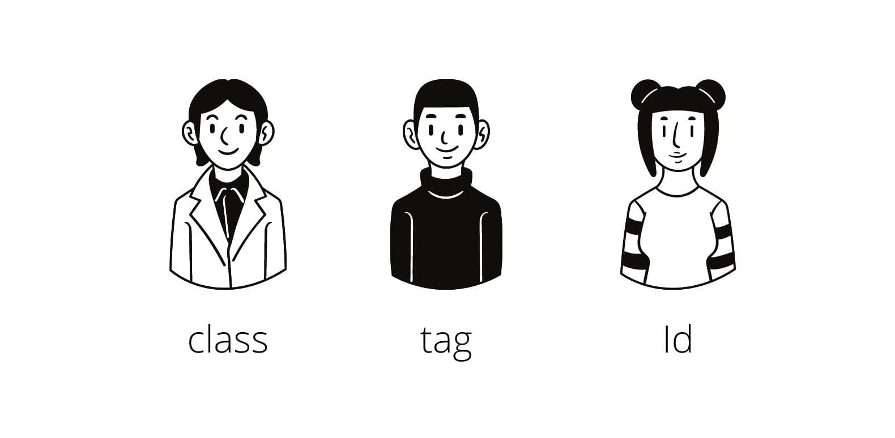

Basics of BeautifulSoup
How does BeautifulSoup work? It’s fairly simple! Imagine our website as a large HTML document. Some websites have very structured and easy-to-scrape HTML (or markup), while others don’t. The BeautifulSoup package basically acts as a filter and “Beautifies” the website’s content, making it easy to scrape!
The history of the ‘BeautifulSoup’ name comes from quite some time ago. Back around 2004, websites were very poorly made and webscrapers could only extract data from very specific formats. Lots of websites had very messy HTML which made it impossible to parse. The messy HTML was commonly dubbed as ‘tag soup’, and thus BeautifulSoup was a package made for Beautifying these ‘tag soups’!
Imagine scraping data off of messy websites... What a headache!
It’s interesting to see how far BeautifulSoup has come, and in fact the contributors to this package are still fairly active to this day! You can view the official documentation here.
Installation
Now let’s finally get down to business. Like I’ve talked about in my previous articles, I highly encourage everyone to follow along with any programming tutorials you read online including this one, so let’s install BeautifulSoup together! The latest version of BeautifulSoup is BS4, so that’s the version we are going to download for today’s tutorial!
Before that, let’s make sure you have Python and pip installed. For those that are unfamiliar, pip is a Python package manager that helps you to install python packages on your local machine. To check if Python is installed, simply input the following line in your commandline:
python
To check if pip is installed, simply input this line:
pip help
If the previous two lines produced any errors in your command line, it is highly likely that Python and pip was not properly installed on your computer. Simply follow this website to download Python and this website to download pip. I know it seems like a hassle but you will definitely need these installations for the future, so you might as well cover your bases now!
Now that Python and pip are properly installed, we can simply install BeautifulSoup through our command line, which requires you to just key in a single line in your command line:
pip install beautifulsoup4
That’s it for any installation and set-up! Pretty simple so far right?
Requests Package
Before we move on to our project, we need to cover another Python package. Apart from using the BeautifulSoup Package, we must first learn to use the request package in Python.
Simply put, the request package helps us to make HTTP requests in our Python scripts and it is automatically installed with Python. It helps us to access websites online and in our case, scrape them! To use this package, we have to import it!
import requests
After importing, we simply make HTTP requests by using the .get() method!
request = requests.get(url)
This will return the response code of our HTTP request (it usually returns <Response [200]> if our request was successful). This may be useful to us in other projects, but when Webscraping we want to get the actual content of the page. We do this simply by accessing the content attribute of our request.
content = request.content
Now this will return the page content itself. Mission Success! However, if you were to print this out, you would realise the page content is still pretty messy and not formatted very optimally for scraping. This is finally where BeautifulSoup comes into action.
By converting our html content into a soup, the page’s content will be formatted into a very aesthetically pleasing format, with each element fairly neatly layed out! This makes our scraping much easier. We do this simply with the following code:
soup = bs(content, ‘html.parser’)
Note that the second argument we pass in (‘html.parser’) is simply to inform our BeautifulSoup object that we are passing it content in HTML format!
Especially for messier HTMLs, BeautifulSoup helps tremendously when trying to scrape data off of websites. Now let’s finally try and scrape some data off a website! We do this by specifying our elements using CSS selectors!
CSS selectors
CSS selectors is a very simple concept! They are patterns and symbols used to specify which HTML elements we want to apply different CSS properties. Simply put, we use CSS selectors to select which elements we want to scrape!
Let's see how we use CSS selectors to scrape our data!
There are a plethora of CSS selectors available for all kinds of situations, the whole list can be seen on the W3schools website here! In this article, I’ll cover 4 basic selectors that will be vital in our project later on.

Some crucial CSS selectors we must master - Classes, tags and IDs!
Firstly, we can use the . symbol to specify the class name of an element. For example if we want to specify all classes with the name “container”, we can use the CSS selector “.container”. Basically, to specify any class name, we use the . symbol followed by the class name itself!
In addition, we can also use the # symbol to specify the ID of an element. This is especially useful because in a HTML document, there can only be one element with the same ID! This means that if we use ID to specify which element we want, we will definitely get that exact element as long as it actually has that ID we specified. For example, to specify an element withj id of “main_post”, we use the CSS selector “#main_post”. Basically, to specify any element with an ID, we use the # symbol followed by the ID of that element!
Another important basic is selecting child elements using CSS selectors! A child element is basically an element that is within another element. If you were to inspect this particular website, you would see many elements that are childs of another (for example, our “.title_box” element is a child of our “#main_post” element!). We do this by simply using a space. For example, if we want to specify our “.title_box” element, we can use the CSS selector “#main_post .title_box”!
Lastly, we can use CSS selectors to specify the tag name of an element. For example, if we want to specify all <div> tags, we can just use “div” as the CSS selector! No special symbols or patterns, simple as that! This may not be as useful since there can be so many elements of the same tag in a HTML document. However, we can stack CSS selectors to specify exactly what pieces of HTML we want!
We do this simply by putting CSS selectors back-to-back! For example, if I wan to be super specific and pick out an element of tag <div> and class “title-box”, I can use the CSS selector “div.title_box”!
Book Review Webscraper
For this project, we will build a scraper that can help us map out all the titles, price and star ratings of our books! We will do this by simply scraping from a Webscraping sandbox website, https://books.toscrape.com/, which is a place that was built for people to practice Webscraping.
Do take note that it is illegal to webscrape from some websites and it is a good practice to view a page’s terms and conditions before scraping its data.
First things first, let’s import our packages! Exactly like we did in the previous section, import our requests and BeautifulSoup packages!
import requests
from bs4 import BeautifulSoup as bs
Then, again like before, request the content from our page and convert it into a BeautifulSoup soup object!
url = “https://books.toscrape.com/”
raw_html = requests.get(url).content
soup = bs(raw_html, ‘html.parser’)
Now let’s get to actual data collection! For our scraper, we would need each books title, price and number of star ratings! It would help if we could identify each book element in the html. If you were to inspect the page’s html using Google Chrome’s inspect tool (right click and hit inspect!), you would see that each of our book’s elements have a class “product-pod”! This means we can specify all book elements by picking out all elements with the class name of “product-pod”! We do this by using BeautifulSoup’s select method.
Using the select method is very simple! Simply input the CSS selector as an argument and it will return a list of all elements that match that CSS selector! You can also use the method .select_one() to return only the first element that matches the CSS selector.
book_elements = soup.select(“.product-pod”)
This will return us a list of all elements with the product_pod class name (All our book elements!).
With this, we can simply loop through all the products and extract all the book titles, book star ratings and price! One important thing to note when using BeautifulSoup is that we can even use our CSS selector methods on portions of our soup (I like calling them “sub-soups”). For example, each one of our book elements can be treated as a sub-soup, and we can treat them as full HTML documents individually and extract data from each of them directly!
With this knowledge, let us loop through our book elements and make a list of book titles, star ratings and prices! Note that we want to extract out the data itself, not the element! This means we want the .text attribute of our elements! (Try it yourself! Print out a full element and the .text attribute of an element! Looks very different huh?)
for book_element in book_elements:
title_element = book_element.select_one("h3 a")
title = title_element.get("title")
price = book_element.select_one(".price_color").text
ratings_element = book_element.select_one(".star-rating")
ratings = ratings_element.get("class")[1]
Ok that was a lot of code at once… Let’s run through it line by line. So we used a for loop to loop through each book element in our list of book elements! This allows us to extract data from each book element at once.
Now for our first piece of data - our Price! We simply get this by specifying the class name “price_color” and getting its .text attribute.
We just need to do that for the next Title and the Ratings right? Well, not exactly… If you were to inspect the page yourself, you would notice that the title elements .text attribute sometimes don’t show the full title name! This does not look like complete data to scrape, but lucky for us the element’s title attribute shows it’s full title! We can get an element’s attribute by using the .get() method, while specifying the attribute name. So in this case, we use .get(“title”) on our title elements to scrape their title names!
Next we have Star Ratings. Similarly to the title, we specify the element with class name “star-rating”, then we have to scrape its class tag to get the star rating, but that’s not enough! If we were to save that, it would leave us with a … list? This is because the star rating element actually has multiple classes (separated by spaces), thus we need to specify the second class name (index of 1) to attain the actual star rating of the book!
Lastly, we print our data in a nice manner and voila! We have built our very own Webscraping project. Congratulations!
Conclusion
Seeing your data flow out smoothly in your console must feel great, but don’t let your imagination stop you! Scrape more data, see how you can analyse your data to draw interesting findings!
Now you can understand the effectiveness of Webscraping and the BeautifulSoup Python package. Imagine yourself before reading this article, unequipped with the skills of Webscraping. If you wanted to attain all these book information, you would probably need to manually scroll through the page and input the data yourself.
Lucky for you, you are now a webscraper and by harnessing your BeautifulSoup capabiulities, no website is protected from your wrath! (Ok I might be exaggerating, some websites may be able to escape just a little..)
I sincerely hope you enjoyed the article and the mini-project we built! If you learned something from reading this, please subscribe to the Coding Cucumbers email newsletter and follow me on any of my socials! Stay tuned for more Webscraping or programming related articles that will be rolling out on this site really soon! Stay cool cucumbers!